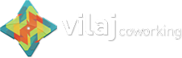

Você se realiza no trabalho?
Ou só trabalha para se sobreviver?
Então talvez você não tenha caido aqui por acaso.
Você se realiza no trabalho?
Ou só trabalha para se sobreviver?
Então talvez você não tenha caido aqui por acaso.
Ao longo de abrir um negócio e mantê-lo envolve uma gama de processos externos (espaço, marca, atendimento ao cliente...)
e também muitos desafios internos (insegurança, ansiedade, overexcitement).
Para os desafios externos lemos bastante, contratamos assessoria e colocamos a mão na massa.
A Roda veio para o segundo ponto: para nos ajudar a olhar para dentro com o objetivo de desenvolver aquela energia extra que possuímos e aumentar a consciencia sobre comparações que nos colocamos ou naquele velho medo de errar.
Contaremos com o facilitador de biodanza e psicólogo Laury Oliveira para nos ajudar a organizar as idéias e também direcionar os objetivos do grupo que emergirão.
Juntos somos mais fortes e ganhamos o apoio do outro.
A Roda possui um chamado, no entanto para ela criar corpo precisaremos de você, da sua expriência e o quanto desejas se doar para poder receber.